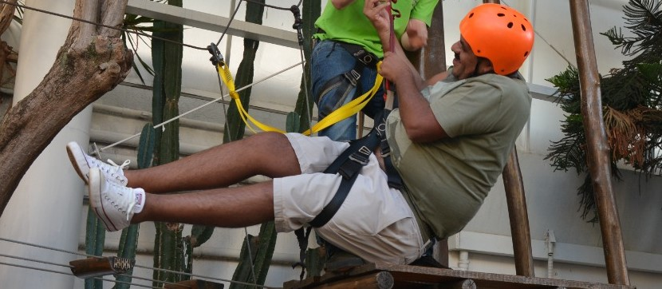
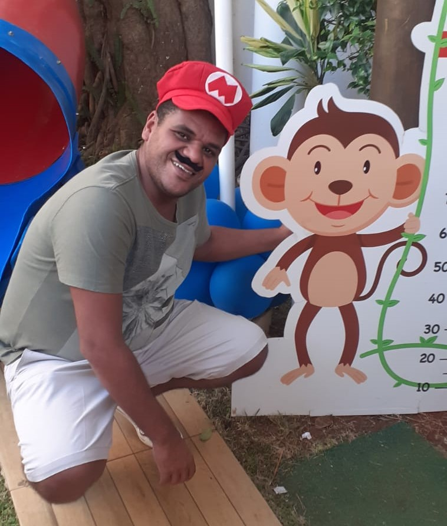
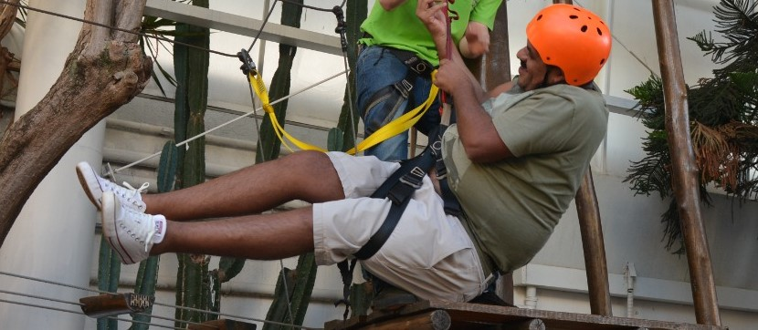
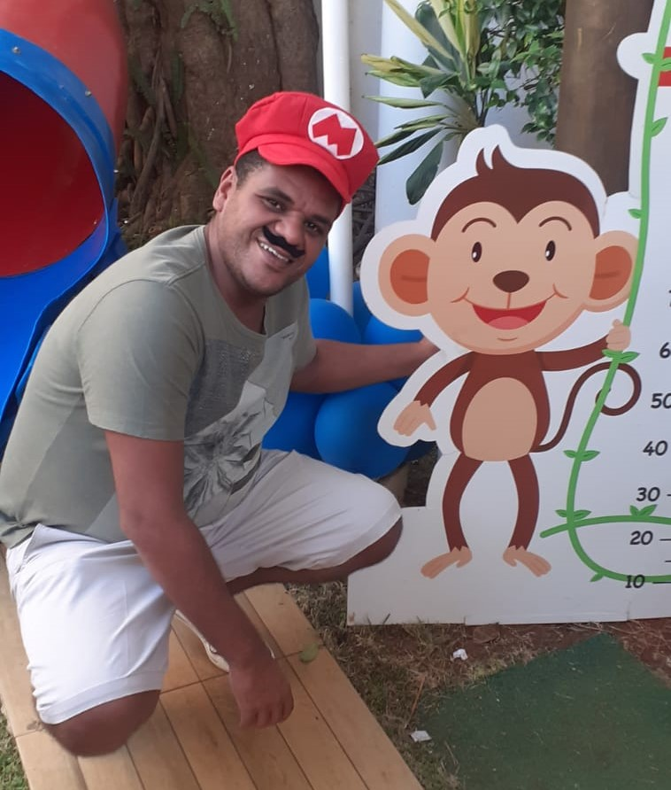
 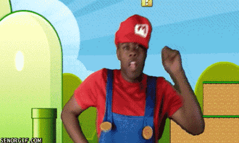
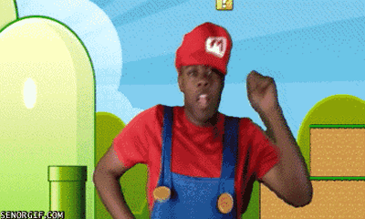
 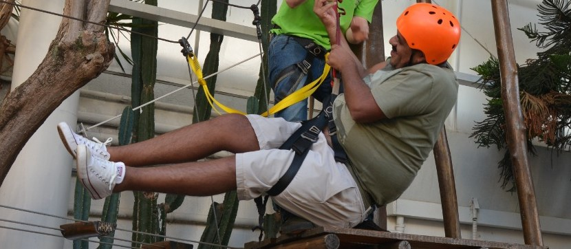
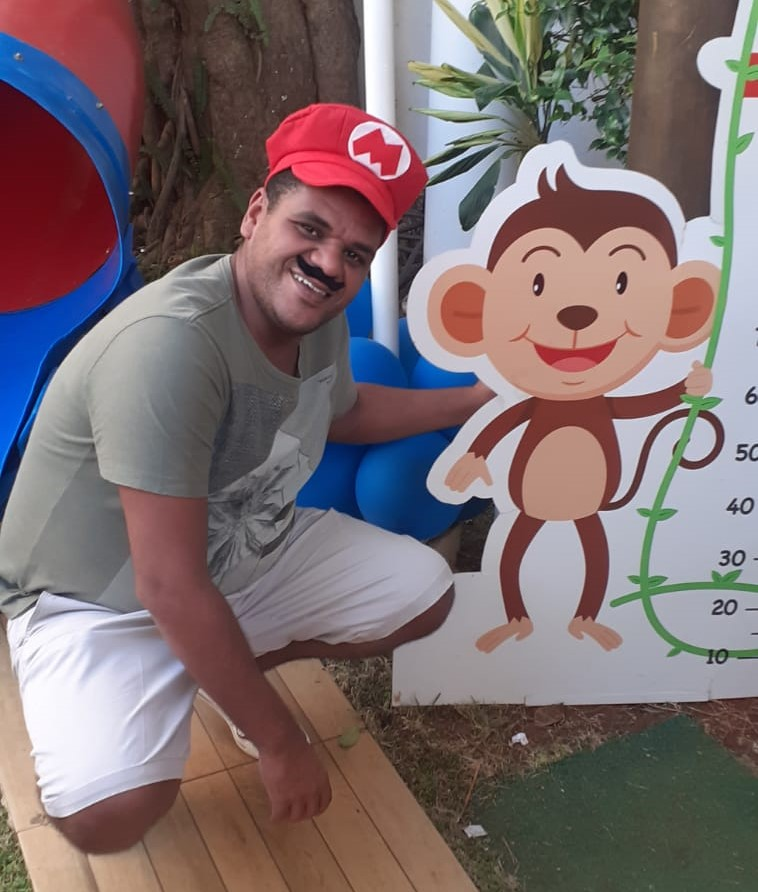
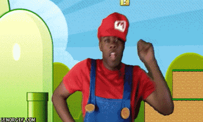
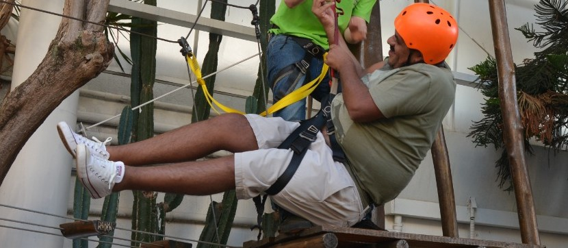
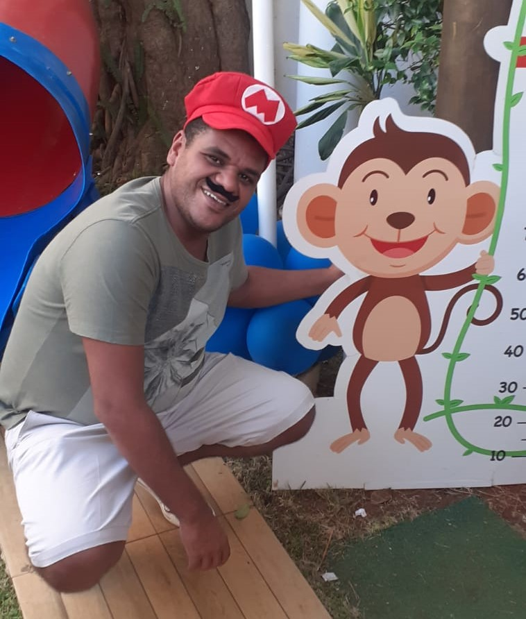
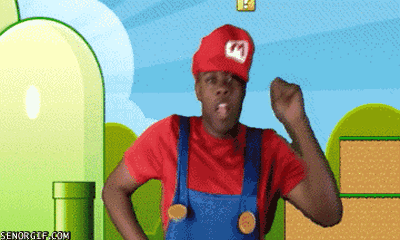
********SUPER RAFA BROS**********
"Ajude o rafa bros encontrar o bar do tio pinico para tomar um vinho cantina do vale"
###PARA JOGAR PRESSIONE ALGUMA TECLA###
###PARA REINICIAR APERTE ATUALIZE A PÁGINA###
BOM JOGO!